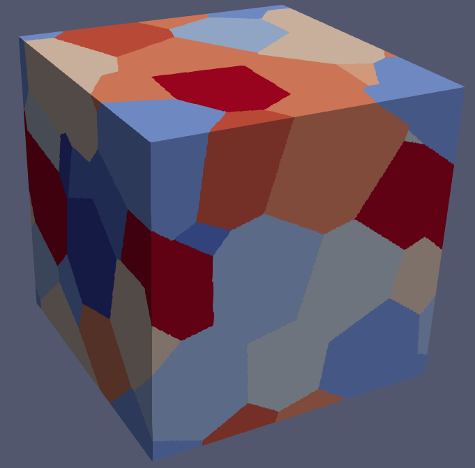
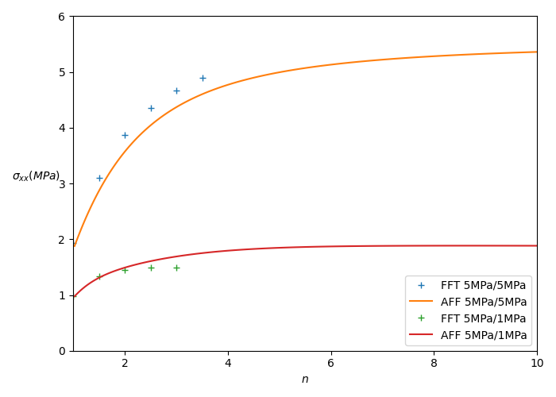

We present here an implementation of the affine formulation [1] for the homogenization of a viscoplastic polycrystal, example which is treated in [2] but with Ponte-Castaneda second-order estimates.
Here, the idea is to show that an implementation of that procedure based on morphological tensors computed by FFT, on a given geometry of polycrystal.
This tutorial first presents the homogenization problem, recalls the
methodology of the affine formulation, presents different the possible
implementations, and show the details of the mfront
file.
We consider a polycrystalline material, which means that each phase
\(r\) is associated to a crystal with
corresponding slip systems \(\underline{\mu}_k^r\) (\(1\leq k\leq K\)). The strain rate in each
crystal \(r\) is given by \[
\begin{aligned}
\dot{\underline{\varepsilon}}=\sum_k \dot{\gamma}_k^r\,
\underline{\mu}_k^r\qquad\text{with}\quad \underline{\mu}_k^r =
\dfrac12\left(\underline{n}_k^r\otimes\underline{m}_k^r +
\underline{m}_k^r\otimes\underline{n}_k^r\right)
\end{aligned}
\] where \(\dot{\gamma}_k^r\) is
the shear strain rate on the \(k^{th}\)
slip system of crystal \(r\), and is
given as a function of the shear stress \(\tau_k^r=\underline{\sigma}:\underline{\mu}_k^r\)
by means of a potential \(\psi_k^r\):
\[
\begin{aligned}
\dot{\gamma}_k^r= {\displaystyle \frac{\displaystyle \partial
\psi_k^r}{\displaystyle \partial \tau}}\left(\tau_k^r\right)
\end{aligned}
\] The expressions above show that on phase (or crystal) \(r\): \[
\begin{aligned}
\dot{\underline{\varepsilon}}={\displaystyle \frac{\displaystyle
\partial \psi_r}{\displaystyle \partial
\underline{\sigma}}}\left(\underline{\sigma}\right)\qquad\text{with}\quad\psi_r
\left(\underline{\sigma}\right)=\sum_k \psi_k^r\left(\tau_k^r\right)
\end{aligned}
\]
Now, the behaviour of the polycrystal is governed by a potential \(\psi\): \[
\begin{aligned}
\dot{\underline{\varepsilon}}={\displaystyle \frac{\displaystyle
\partial \psi_r}{\displaystyle \partial
\underline{\sigma}}}\left(\underline{\sigma}\right)\qquad\psi(\underline{\sigma})=
\sum_{r=1}^{N}\chi_r\,\psi_r (\underline{\sigma})
\end{aligned}
\] where \(N\) is the number of
phases (or crystals) and \(\chi_r\) is
characteristic function of phase \(r\).
In all the sequel, we just note \(\underline{\varepsilon}\) for \(\dot{\underline{\varepsilon}}\).
We impose a strain rate \(\underline{E}\) to the polycrystal and look for the solution \(\underline{\varepsilon},\underline{\sigma}\) such that: \[ \begin{aligned} &\mathrm{div}\,\underline{\sigma}=\underline{0}\\ &\underline{\varepsilon}\in\mathcal K(\underline{E})\\ &\underline{\varepsilon}= {\displaystyle \frac{\displaystyle \partial \psi}{\displaystyle \partial \underline{\sigma}}}\left(\underline{\sigma}\right) \end{aligned} \]
where we introduced the space of kinematically admissible fields \(\mathcal K(\underline{E})\), depending on the boundary conditions used (in the implementation, we work with periodic boundary conditions).
The idea is to linearize the behaviour around a reference stress \(\underline{\sigma}^r\): \[ \underline{\varepsilon}_r(\underline{\sigma})\approx\underline{\mathbf{M}}_r\left(\underline{\sigma}^r\right):\underline{\sigma}+\underline{e}^r \] where \[ \underline{\mathbf{M}}_r\left(\underline{\sigma}^r\right)={\displaystyle \frac{\displaystyle \partial \underline{\varepsilon}_r}{\displaystyle \partial \underline{\sigma}}}\left(\underline{\sigma}^r\right)={\displaystyle \frac{\displaystyle \partial^2 \psi_r}{\displaystyle \partial \underline{\sigma}^2}}\left(\underline{\sigma}^r\right)\qquad\text{and}\quad\underline{e}^r = {\displaystyle \frac{\displaystyle \partial \psi_r}{\displaystyle \partial \underline{\sigma}}}(\underline{\sigma}^r)-\underline{\mathbf{M}}_r\left(\underline{\sigma}^r\right):\underline{\sigma}^r \] For a given set of reference stresses, this affine behaviour can be viewed as a so-called “thermoelastic comparison composite”, and this composite can be homogenized. This leads to a linear problem of the form \[ \begin{aligned} &\mathrm{div}\, \left(\underline{\mathbf{L}}_r:\left(\underline{\varepsilon}-\underline{e}^r\right)\right)=\underline{0}\\ &\underline{\varepsilon}\in\mathcal K\left(\underline{E}\right)\\ &\underline{\mathbf{L}}_r=\left[{\displaystyle \frac{\displaystyle \partial^2 \psi_r}{\displaystyle \partial \underline{\sigma}^2}}\left(\underline{\sigma}^r\right)\right]^{-1}\qquad\text{and}\qquad\underline{e}^r={\displaystyle \frac{\displaystyle \partial \psi_r}{\displaystyle \partial \underline{\sigma}}}\left(\underline{\sigma}^r\right)-\underline{\mathbf{L}}_r^{-1}:\underline{\sigma}^r \end{aligned} \]
Resolving this problem gives the average on phase \(r\) of the strain solution \(\underline{\varepsilon}\) as \[ \begin{aligned} \langle\underline{\varepsilon}\rangle_r = \underline{\mathbf{A}}_r\left(\underline{\sigma}^1,...,\underline{\sigma}^N\right):\underline{E}+ \sum_s \underline{\mathbf{B}}_{rs}\left(\underline{\sigma}^1,...,\underline{\sigma}^N\right):\underline{e}^s\left(\underline{\sigma}^s\right) \end{aligned} \] where \(\underline{\mathbf{A}}_r\left(\underline{\sigma}^1,...,\underline{\sigma}^N\right)\) and \(\underline{\mathbf{B}}_{rs}\left(\underline{\sigma}^1,...,\underline{\sigma}^N\right)\) can be obtained by a homogenization procedure (mean-field scheme, FFT…). The stresses are obtained by substracting the strain \(\underline{e}^r\) and multiplying by the moduli \(\underline{\mathbf{L}}_r=\left(\underline{\mathbf{M}}_r\right)^{-1}\), if it exists: \[ \begin{aligned} \langle\underline{\sigma}\rangle_r = \underline{\mathbf{L}}_r\left(\underline{\sigma}^r\right):\underline{\mathbf{A}}_r\left(\underline{\sigma}^1,...,\underline{\sigma}^N\right):\underline{E}+ \sum_s \underline{\mathbf{L}}_r\left(\underline{\sigma}^r\right):\underline{\mathbf{B}}_{rs}\left(\underline{\sigma}^1,...,\underline{\sigma}^N\right):\underline{e}^s\left(\underline{\sigma}^s\right) - \underline{\mathbf{L}}_r\left(\underline{\sigma}^r\right):\underline{e}^r\left(\underline{\sigma}^r\right) \end{aligned} \]
The last question is the choice of the reference stresses \(\underline{\sigma}^r\) (\(1\leq r\leq N\)). A discussion in [1] leads to the simple assumption that these reference stresses are the averages per phase of the stress in the thermoelastic composite: \[ \begin{aligned} \underline{\sigma}^r = \langle\underline{\sigma}\rangle_r \end{aligned} \] where \(\underline{\sigma}\) here stands for the stress solution of the thermoelastic homogenization problem.
The macroscopic stress hence can be obtained by the classical relation: \[ \begin{aligned} \underline{\Sigma}=\sum_rc_r\,\underline{\sigma}^r=\sum_rc_r\,\langle\underline{\sigma}\rangle_r=\underline{\mathbf{C}}^{\mathrm{eff}}:\underline{E}+\underline{\tau}^{\mathrm{eff}} \end{aligned} \] where \[ \begin{aligned} \underline{\mathbf{C}}^{\mathrm{eff}}=\sum_rc_r\,\underline{\mathbf{L}}_r:\underline{\mathbf{A}}_r\qquad\text{and}\qquad\underline{\tau}^{\mathrm{eff}}=\sum_{r,s}c_r\,\underline{\mathbf{L}}_r:\underline{\mathbf{B}}_{rs}:\underline{e}^s-\sum_{r}c_r\,\underline{\mathbf{L}}_r:\underline{e}^r \end{aligned} \]
The tangent operator is obtained by derivation: \[ \begin{aligned} \dfrac{\mathrm{d}\underline{\Sigma}}{\mathrm{d}\underline{E}}=\sum_r c_r\,{\displaystyle \frac{\displaystyle \partial \underline{\sigma}^r}{\displaystyle \partial \underline{E}}} \end{aligned} \]
In the expressions of the tangent operator, we can compute the term \({\displaystyle \frac{\displaystyle \partial \underline{\sigma}^r}{\displaystyle \partial \underline{E}}}\) by means of the jacobian matrix, also done and explained in the documentation of the Implicit DSL. We explain it below.
The resolution consists in \[ \text{Find}\quad\underline{\sigma}^r\quad\text{such that}\quad\underline{\sigma}^r = \langle\underline{\sigma}\rangle_r \] where \(\underline{\sigma}\) is the stress field solution of a homogenization problem of the form: \[ \begin{aligned} &\mathrm{div}\, \left(\underline{\mathbf{L}}_r:\left(\underline{\varepsilon}-\underline{e}^r\right)\right)=\underline{0}\\ &\underline{\varepsilon}\in\mathcal K\left(\underline{E}\right)\\ &\underline{\mathbf{L}}_r=\left[{\displaystyle \frac{\displaystyle \partial^2 \psi_r}{\displaystyle \partial \underline{\sigma}^2}}\left(\underline{\sigma}^r\right)\right]^{-1}\qquad\text{and}\qquad\underline{e}^r={\displaystyle \frac{\displaystyle \partial \psi_r}{\displaystyle \partial \underline{\sigma}}}\left(\underline{\sigma}^r\right)-\underline{\mathbf{L}}_r^{-1}:\underline{\sigma}^r \end{aligned} \]
The iterative resolution of the non-linear system can be summarized as
\[ \begin{aligned} &\underset{\substack{\\ \\ \\ \Downarrow\\ \\ \\\text{analytic / finite difference}\\ \\ \\\text{\texttt{@BehaviourVariable} / directly provided}}}{\underline{\mathbf{L}}_r= \left[{\dfrac{\partial^2 \psi_r}{\partial \underline{\sigma}^2}}\left(\underline{\sigma}^r\right)\right]^{-1},\quad\underline{e}^r={\displaystyle \frac{\displaystyle \partial \psi_r}{\displaystyle \partial \underline{\sigma}}}\left(\underline{\sigma}^r\right)-\underline{\mathbf{L}}_r^{-1}:\underline{\sigma}^r}\qquad\rightarrow\qquad \underset{\substack{\\ \\ \\ \Downarrow\\ \\ \\\text{mean-field scheme / morphological tensors}\\ \\ \\\texttt{tfel::material::homogenization}}}{\langle\underline{\sigma}\rangle_r = \underline{\mathbf{L}}_r:\underline{\mathbf{A}}_r:\underline{E}+ \sum_s \underline{\mathbf{L}}_r:\underline{\mathbf{B}}_{rs}:\underline{e}^s - \underline{\mathbf{L}}_r:\underline{e}^r}\\ &\\ &\qquad\qquad\qquad\qquad\qquad\qquad\qquad\underset{\substack{\\ \\ \\ \Downarrow\\ \\ \\\text{Analytical Jacobian / Numerical Jacobian}\\ \\ \\\texttt{NewtonRaphson NumericalJacobian}}}{f_{\underline{\sigma}^r}=\underline{\sigma}^r-\langle\underline{\sigma}\rangle_r} \end{aligned} \]
The first step of the resolution consists in computing the moduli
\(\underline{\mathbf{M}}_r\) and free
strains \(\underline{e}^r\). It can be
done analytically (as below) or via finite difference or automatic
differentiation. Moreover, for both strategies, we could use a
BehaviourVariable, defining the local behaviour in an
external file (in our example, the potential is to simple to do
that).
The second step is the computation of the tensors \(\underline{\mathbf{A}}_r\) and \(\underline{\mathbf{B}}_{rs}\). This can be
achieved by means of mean-field schemes (the namespace
tfel::material::homogenization provides the good tensors).
This can also be done via morphological tensors, computed on a given
geometry of polycrystal. We will present this second possibility
below.
We note that the equation relative to the third step will give our residue.
In fact, the thermoelastic problem can be rewritten as a
Lippmann-Schwinger equation (see [3, 4]).
Let us write \(\underline{\tau}=\underline{\sigma}-\underline{\mathbf{L}}_0:\underline{\varepsilon}\)
with \(\underline{\sigma}=\underline{\mathbf{L}}:\left(\underline{\varepsilon}-\underline{e}\right)\).
We have \(\underline{\tau}=\underline{\mathbf{\delta}}\underline{\mathbf{L}}:\underline{\varepsilon}-\underline{\mathbf{L}}:\underline{e}\)
with \(\underline{\mathbf{\delta}}\underline{\mathbf{L}}=\underline{\mathbf{L}}-\underline{\mathbf{L}}_0\).
We have, because, \(\mathrm{div}\,\underline{\sigma}=0\), \[
\begin{aligned}
\underline{\varepsilon}=\underline{E}-\underline{\mathbf{\Gamma}}_0\left(\underline{\tau}\right)
\end{aligned}
\] where \(\underline{\mathbf{\Gamma}}_0\) is the
Green operator associated to the elasticity \(\underline{\mathbf{L}}_0\) (this elasticity
must be chosen by the user). It gives (due to the expression of \(\underline{\tau}\)) \[
\begin{aligned}
\underline{\varepsilon}=\underline{E}-\underline{\mathbf{\Gamma}}_0\left(\underline{\mathbf{\delta}}\underline{\mathbf{L}}:\underline{\varepsilon}-\underline{\mathbf{L}}:\underline{e}\right)
\end{aligned}
\] We will not resolve this equation exactly, but we will
consider the average of the fields: \[
\begin{aligned}
\langle\underline{\varepsilon}\rangle_r +
\sum_s\underline{\mathbf{\Gamma}}_{rs}:\underline{\mathbf{\delta}}\underline{\mathbf{L}}_s:\langle\underline{\varepsilon}\rangle_s=
\underline{E}+\sum_s\underline{\mathbf{\Gamma}}_{rs}:\underline{\mathbf{L}}_s:\underline{e}^s
\end{aligned}
\] where \[
\begin{aligned}
\underline{\mathbf{\Gamma}}_{rs} =
\sum_j\langle\,\underline{\mathbf{\Gamma}}_0(\chi_s\,\underline{s}_j)\otimes\underline{s}_j\,\rangle_r
\end{aligned}
\] is what we call a morphological tensor or an interaction
tensor, and can be computed by FFT or FEM before the mfront
integration. This tensor depends on the Green operator \(\underline{\mathbf{\Gamma}}_0\), relative
to the elasticity \(\underline{\mathbf{L}}_0\), and a basis of
symmetric second-order tensors \((\underline{s}_1,...,\underline{s}_d)\)
(\(d=6\) in 3D). Depending on the
number of phases \(N\), the computation
of the \(\underline{\mathbf{\Gamma}}_{rs}\) is more
or less costly, but it is achieved at the beginning, once and for
all.
After inversion of the linear system below, whose unknowns are the \(\langle\underline{\varepsilon}\rangle_s\), we obtain \[ \begin{aligned} \langle\underline{\varepsilon}\rangle_r= \sum_t\underline{\mathbf{T}}_{rt}:\left[\underline{E}+\sum_s\underline{\mathbf{\Gamma}}_{ts}:\underline{\mathbf{L}}_s:\underline{e}^s\right] \end{aligned} \] where \(\underline{\mathbf{T}}_{rt}\) is the linear operator issued from the linear resolution. and we directly obtain the expressions of \(\underline{\mathbf{A}}_r\) and \(\underline{\mathbf{B}}_{rs}\): \[ \begin{aligned} &\underline{\mathbf{A}}_r= \sum_t\underline{\mathbf{T}}_{rt}\\ &\underline{\mathbf{B}}_{rs}= \sum_t\underline{\mathbf{T}}_{rt}:\underline{\mathbf{\Gamma}}_{ts}:\underline{\mathbf{L}}_s \end{aligned} \]
We note that the reference medium can be chosen in this approach. A natural approach is to take a \(\underline{\mathbf{L}}_0\) isotropic near \(\underline{\mathbf{L}}^{\mathrm{hom}}\). To that extent we will make use of the fact that for an elasticity \(\underline{\mathbf{C}}_1=r_0\underline{\mathbf{C}}_0\) the strain Green operator \(\underline{\mathbf{\Gamma}}_1\) relative to \(\underline{\mathbf{C}}_1\) is given by \[ \underline{\mathbf{\Gamma}}_1=\dfrac{1}{r_0}\underline{\mathbf{\Gamma}}_0 \] Hence, we will compute the morphological tensors \(\underline{\mathbf{\Gamma}}_{rs}\) for a given elasticity \(\underline{\mathbf{C}}_0\), and we can change the reference medium by multiplication of \(\underline{\mathbf{C}}_0\) by \(r_0\) and division of \(\underline{\mathbf{\Gamma}}_0\) by \(r_0\).
Moreover, in our case, it makes sense to take a reference medium \(\underline{\mathbf{C}}_0=2\mu_0\underline{\mathbf{K}}\). Afterwards, we will update the elasticity by taking \(\underline{\mathbf{C}}_1=2\mu_{\mathrm{hom}}\underline{\mathbf{K}}\), where \(\mu_{\mathrm{hom}}\) is equal to the shear modulus given by the projection of \(\underline{\mathbf{C}}_{\mathrm{hom}}\) on \(\underline{\mathbf{K}}\), where \(\underline{\mathbf{C}}_{\mathrm{hom}}\) is the homogenized tensors obtained at previous step of the Newton-Raphson algorithm.
All the files are available in the MFrontGallery
project, here,
under the name MassonAffineFormulation.
The geometry of our polycrystal is generated with merope, with
a Voronoi tesselation. This geometry is saved as an array and will be
used only for the approach based on morphological tensors. The image
below shows an example of such a polycrystal. There are here 10
crystals. The volume fractions can also be computed on this
microstructure

The morphological tensors were computed using a python
script with numpy.fft. The orientations of the slip systems
will be given by angles, stored in the file
polycrystal.csv. This file also contains, at the end of
each line, the volume fraction associated to a crystal. They are in our
case the same as the one computed on the generated microstructure.
The potential \(\psi_k^r\) will be of the form \[ \begin{aligned} \psi_k^r \left(\tau\right)= \dfrac{\dot{\gamma}_0\tau_0^k}{n+1}\left(\dfrac{|\tau|}{\tau_0^k}\right)^{n+1} \end{aligned} \] where the strain rate \(\dot{\gamma}_0\) and the creep exponent \(n\geq 1\) will be chosen identical for all \(k,r\), and the resolved shear stress \(\tau_0^k\) depends on \(k\).
The derivatives of the potential are \[ \begin{aligned} &\underline{\varepsilon}_r(\underline{\sigma})={\displaystyle \frac{\displaystyle \partial \psi_r}{\displaystyle \partial \underline{\sigma}}}=\sum_k {\displaystyle \frac{\displaystyle \partial \psi_k^r}{\displaystyle \partial \tau}}\left(\tau_k^r\right)\,\underline{\mu}_k^r=\sum_k\mathrm{sgn}(\tau)\,\dot{\gamma}_0\left(\dfrac{|\tau_k^r|}{\tau_0^{k}}\right)^{n}\underline{\mu}_k^r\qquad\text{with}\quad \tau_k^r = \underline{\sigma}:\underline{\mu}_k^r\\ &\underline{\mathbf{M}}_r(\underline{\sigma})={\displaystyle \frac{\displaystyle \partial^2 \psi_r}{\displaystyle \partial \underline{\sigma}^2}}=\sum_k {\displaystyle \frac{\displaystyle \partial^2 \psi_k^r}{\displaystyle \partial \tau^2}}\left(\tau_k^r\right)\,\underline{\mathbf{N}}_k^r=\sum_k \dfrac{n\,\dot{\gamma}_0}{\tau_0^{k}}\left(\dfrac{|\tau_k^r|}{\tau_0^{k}}\right)^{n-1}\underline{\mathbf{N}}_k^r,\qquad\text{with}\quad\underline{\mathbf{N}}_k^r=\underline{\mu}_k^r\otimes\underline{\mu}_k^r \end{aligned} \] and then defining \(\overline{\tau}_k^r=\underline{\sigma}^r:\underline{\mu}_k^r\) where \(\underline{\sigma}^r\) is the reference stress, we have \[ \begin{aligned} &\underline{\mathbf{M}}_r(\underline{\sigma}^r)=\sum_k \dfrac{n\,\dot{\gamma}_0}{\tau_0^{k}}\left(\dfrac{|\overline{\tau}_k^r|}{\tau_0^{k}}\right)^{n-1}\underline{\mathbf{N}}_k^r\\ &\underline{e}^r(\underline{\sigma}^r)=\sum_k\left(\mathrm{sgn}(\overline{\tau}_k^r)-n\right)\,\dot{\gamma}_0\left(\dfrac{|\overline{\tau}_k^r|}{\tau_0^{k}}\right)^{n}\underline{\mu}_k^r \end{aligned} \] We see here that the modulus \(\underline{\mathbf{M}}_r\) is not invertible. Hence, in the following, we add a small tensor to \(\underline{\mathbf{M}}_r\) in order to make it invertible (see also appendix B.1 of [2]): \[ \underline{\mathbf{L}}_r=\left[\underline{\mathbf{M}}_r+\kappa\underline{\mathbf{I}}\right]^{-1} \]
The beginning of the mfront file reads:
@DSL ImplicitII;
@Behaviour Affine_tensors;
@Author Martin Antoine;
@Date 06 / 03 / 26;
@Description{"Affine formulation for homogenization of a viscoplastic polycrystal, Masson et al. 2001., with morphological tensors"};
@UseQt false;
@Algorithm NewtonRaphson;
@Epsilon 1e-14;Moreover, we need to include a header file for handling the rotations of the grains with their slip systems:
and a file which contains the morphological tensors. This file is
present in a repository, let’s say
extra-headers/TFEL/Material/ located at the same place as
the .mfront file.
@TFELLibraries {"Material"};
@Includes{
#include "tensors.hxx"
#include "TFEL/Material/IsotropicModuli.hxx"
#include "TFEL/Material/PolyCrystalsSlidingSystems.hxx"}The compilation hence will be done like that:
Of cours the tensors are computed before via FFT as explained above (see the folder mentioned above for the computation).
The sliding systems will be generated using these lines (the same procedure as for the tutorial on the Berveiller-Zaoui scheme):
@ModellingHypothesis Tridimensional;
@OrthotropicBehaviour;
@CrystalStructure HCP;
@SlidingSystems{<1, 1, -2, 0>{1, -1, 0, 0},
<-2, 1, 1, 3>{1, -1, 0, 1},
<-2, 1, 1, 0>{0, 0, 0, 1},
<1, 1, -2, 0>{1, -1, 0, 1}};but the rotations of the grains will be performed later, in the
Integrator code block:
using ExtendedPolyCrystalsSlidingSystems =
ExtendedPolyCrystalsSlidingSystems<Np, Affine_tensorsSlipSystems<real>, real>;
const auto& gs =
ExtendedPolyCrystalsSlidingSystems::getPolyCrystalsSlidingSystems("polycrystal.csv");The state variables are the stresses \(\underline{\sigma}^r\) on each phase.
Note also that Np is the number of phases (or crystals).
We define it before like that:
Note that among several local variables, one of them, for morphological tensors, is
This matrix will store the morphological tensors. Indeed, in the
InitLocalVariables code block, we can load these
coefficients, which are in fact situated in the header
tensors.hxx
There is no difficulty in computing the tangent modulus and
free-strain, in the Integrator code block:
using namespace tfel::math;
Stensor4 LSC;
Stensor e[Np];
Stensor dpsi_dsigma[Np];
auto tau0k = tau1;
for (int r=0;r<Np;r++){
M[r]=Stensor4::zero();
dpsi_dsigma[r]=Stensor::zero();
frac[r]=gs.volume_fractions[r];
for (int k=0;k<Nss;k++){
if (k>int(Nss/12)){tau0k=tau1;}
else{tau0k=tau2;}
const auto Nkr = gs.mus[r][k]^gs.mus[r][k];
const auto taukr = gs.mus[r][k] | (sigma[r]+dsigma[r]);
const auto puisn_1 = pow(max(abs(taukr),1e-5)/tau0k, nexp-1);
const auto fac= nexp*gamma0/tau0k*puisn_1;
M[r]+=fac*Nkr;
const auto puisn = puisn_1*abs(taukr)/tau0k;
const auto sgn= taukr< 0 ? -real(1) : real(1);
dpsi_dsigma[r]+=sgn*gamma0*puisn*gs.mus[r][k];
}
e[r]=dpsi_dsigma[r]-M[r]*(sigma[r]+dsigma[r]);
M[r]=M[r]+kap*I;
L[r]=invert(M[r]);
}Here, on line 12, we set \(\tau_0^k=\tau_1\) for all gliding systems, except for \(k=0\) and \(k=1\), for which we set \(\tau_0^k=\tau_2\).
Note that here, a tensor kap*I is added to the
compliance M[r] line 21. In our case, we set
kap as a MaterialProperty that can evolve with
time (see mtest file below). We can hence consider \(\underline{\mathbf{L}}_r\), the inverse of
\(\underline{\mathbf{M}}_r+\kappa\underline{\mathbf{I}}\).
The computation of tensors Ar and Brs is as follows
tmatrix<6*Np,6*Np,real> MAT;
tmatrix<6*Np,6*Np,real> G;
tmatrix<6*Np,6,real> E;
for (int r=0;r<Np;r++){
map_derivative<Stensor,Stensor>(E,6*r,0)=I;
for (int s=0;s<Np;s++){
const auto dL = L[s]-r0*L0;
map_derivative<Stensor,Stensor>(MAT,6*r,6*s) =1/r0*GAMMA[r][s]*dL;
map_derivative<Stensor,Stensor>(G,6*r,6*s) =1/r0*GAMMA[r][s]*L[s];
}
map_derivative<Stensor,Stensor>(MAT,6*r,6*r) +=I;
}
TinyMatrixInvert<6*Np,real>::exe(MAT);
A = MAT*E;
tmatrix<6*Np,6*Np,real> B = MAT*G;Here we see that we multiply the morphological tensors by
1/r0 in order to adapt the reference medium. The
r0 will be updated after, depending on the
Chom obtained. The dL also is impacted and
written as L[r]-r0*L0.
Here is the computation of the residue, the jacobian and of macroscopic stress:
Chom=Stensor4::zero();
for (int r=0;r<Np;r++){
Ar[r]=map_derivative<Stensor,Stensor>(A,6*r,0);
Chom+=frac[r]*L[r]*Ar[r];
}
auto KGhom=tfel::material::computeKGModuli(Chom);
muhom=KGhom.mu;
r0=muhom/mu0;
for (int r=0;r<Np;r++){
tau_eff-=frac[r]*L[r]*e[r];
fsigma[r] = sigma[r]+dsigma[r]-L[r]*Ar[r]*(eto+deto)+L[r]*e[r];
for (int s=0;s<Np;s++){
auto Brs = map_derivative<Stensor,Stensor>(B,6*r,6*s);
tau_eff+=frac[r]*L[r]*Brs*e[s];
fsigma[r]-=L[r]*Brs*e[s];
}
dfsigma_ddsigma(r,r)=I;
}
sig=Chom*(eto+deto)+tau_eff;The jacobian here is approximative and given by
dfsigma_ddsigma(r,r)=I. We also see that we update the
factor r0 with the shear modulus muhom,
obtained by projection of Chom on the tensor
K.
The computation of the tangent operator necessitates the computation
of \({\displaystyle \frac{\displaystyle
\partial \underline{\sigma}^r}{\displaystyle \partial
\underline{E}}}\). To do that, we use a technique widely used in
MFront. The idea is to write the non-linear system to solve
as: \[
\begin{aligned}
\underline{\varepsilon}_r\left(\underline{\sigma}^r\right) -
\underline{\mathbf{L}}_r\left(\underline{\sigma}^r\right):\underline{\mathbf{A}}_r\left(\underline{\sigma}^1,...,\underline{\sigma}^N\right):\underline{E}-
\sum_s
\underline{\mathbf{B}}_{rs}\left(\underline{\sigma}^1,...,\underline{\sigma}^N\right):\underline{e}^s\left(\underline{\sigma}^s\right)+\underline{\mathbf{L}}_r\left(\underline{\sigma}^r\right):\underline{e}^r\left(\underline{\sigma}^r\right)=
f_{\sigma^r}(\underline{E},\underline{\sigma}^1,...,\underline{\sigma}^N)=0
\end{aligned}
\] and by derivation of \(f_{\sigma^r}\) w.r.t. \(\underline{E}\): \[
\begin{aligned}
-\underline{\mathbf{L}}_r\left(\underline{\sigma}^r\right):\underline{\mathbf{A}}_r\left(\underline{\sigma}^1,...,\underline{\sigma}^N\right)+\sum_s\underline{\mathbf{J}}_{rs}:{\displaystyle
\frac{\displaystyle \partial \underline{\sigma}^s}{\displaystyle
\partial \underline{E}}}=0
\end{aligned}
\] where \(\underline{\mathbf{J}}_{rs}={\displaystyle
\frac{\displaystyle \partial f_{\sigma^r}}{\displaystyle \partial
\underline{\sigma}^s}}\) stands for the sub-block \((r,s)\) of the Jacobian. Hence \[
\begin{aligned}
{\displaystyle \frac{\displaystyle \partial
\underline{\sigma}^r}{\displaystyle \partial
\underline{E}}}=\sum_s\mathbf
{iJ}_{rs}:\underline{\mathbf{L}}_s\left(\underline{\sigma}^s\right):\underline{\mathbf{A}}_s\left(\underline{\sigma}^1,...,\underline{\sigma}^N\right)
\end{aligned}
\] where \(\mathbf {iJ}\) is the
inverse of the Jacobian. The implementation is
@TangentOperator{
for (int r=0;r<Np;r++){
map_derivative<Stensor,Stensor>(A,6*r,0)=L[r]*Ar[r];
}
tmatrix<6*Np,6*Np,real> iJ = jacobian;
TinyMatrixInvert<6*Np,real>::exe(iJ);
dsigma_deto=iJ*A;
Dt=Stensor4::zero();
for (int r=0;r<Np;r++){
const auto dsigmar_deto = map_derivative<Stensor,Stensor>(dsigma_deto,6*r,0);
Dt+=frac[r]*dsigmar_deto;
}
}Note the use on line 7 of the function
tfel::math::map_derivative which allows to extract (but
also to fill) a block from a tmatrix.
For the tests, we use mtest. However, note that the
strain we impose is in fact a strain rate. The idea for us is to keep
this strain rate constant and to make vary the parameter \(n\) with time. We hence set it as a
function which varies exponentially with time (this is just a
choice).
Besides, we choose \(\tau_1=5 MPa\), and for \(\tau_2\) we try \(\tau_2=5MPa\) and \(\tau_2=1MPa\).
The .mtest file is the following:
@ModellingHypothesis 'Tridimensional';
@Behaviour<Generic> 'src/libBehaviour.so' 'Affine_tensors';
@ExternalStateVariable 'Temperature' {0 : 1000,1:1000};
@MaterialProperty<function> 'nexp' "1+0.9*(exp(2.4*t)-1)";
@MaterialProperty<constant> 'tau1' 5.;
@MaterialProperty<constant> 'tau2' 1.;
@MaterialProperty<function> 'kap' "0.05";
@ImposedStrain 'EXX' {0 : 1, 1 : 1};
@ImposedStrain 'EYY' {0 : -1, 1 : -1};
@ImposedStrain 'EZZ' {0 : 0, 1 : 0};
@ImposedStrain 'EXY' {0 : 0, 1 : 0};
@ImposedStrain 'EXZ' {0 : 0, 1 : 0};
@ImposedStrain 'EYZ' {0 : 0, 1 : 0};
@Times {0.,1 in 50};
@OutputFilePrecision 14;Note that kap on line 9 is related to the small
compliance we add to \(\underline{\mathbf{M}}_r\) in order to make
it invertible.

In this figure we plotted the results when \(\tau_2\) is equal to \(5 MPa\) and when it is equal to \(1MPa\). We plot the implementation of the affine approach with morphological tensors (AFF). FFT results are also plotted (FFT). We see that the morphological approach gives results in good agreement with FFT computation.